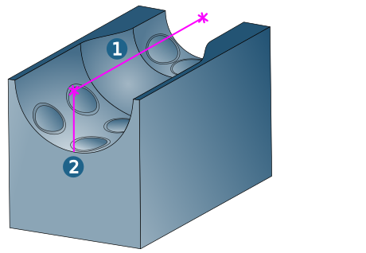
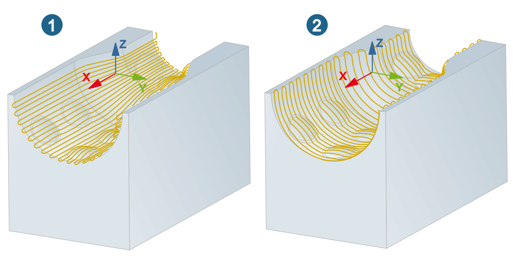
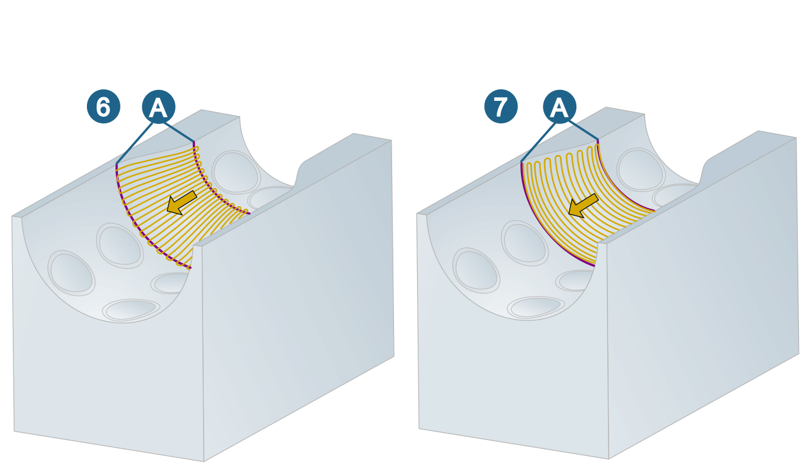
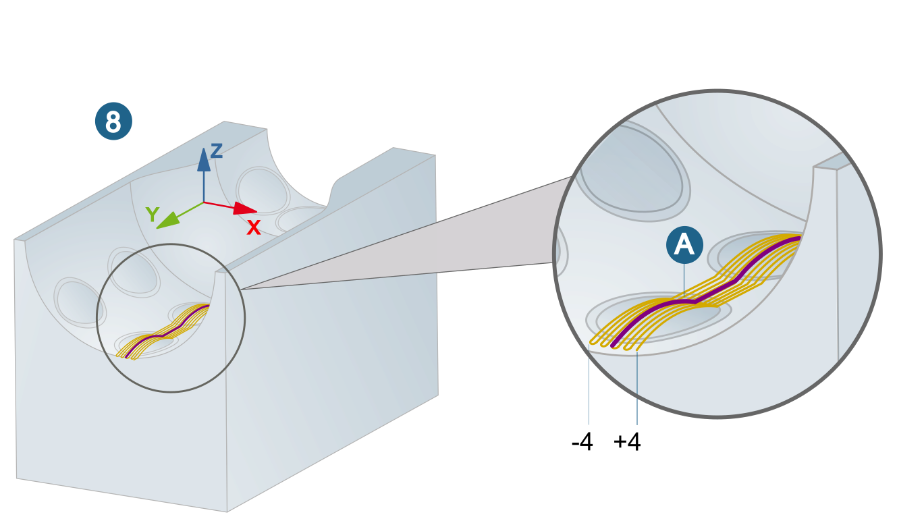
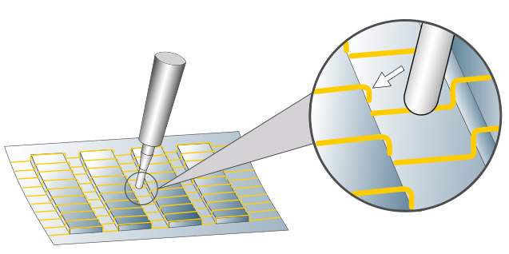
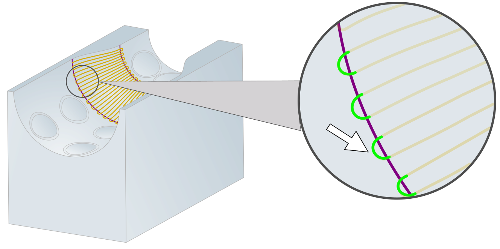
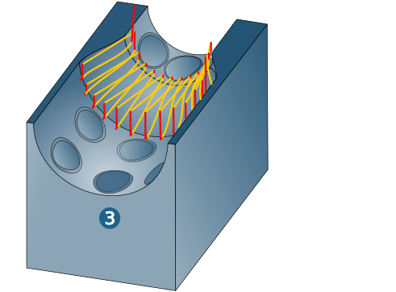
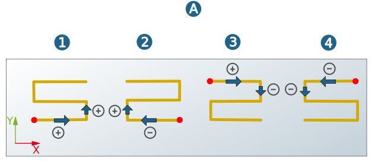
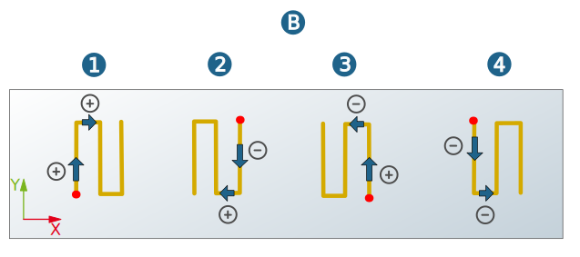

Strategy
Define the machining strategy.
Radial reference system
Center line (1): The calculation of the toolpaths is based on a projection starting from the center line.
Radial reference line (2) Defines the main direction of the projection.
|  |
Infeed strategy
The following infeed strategies are available:
Along axis (1): The toolpaths run along the X axis.
Radial (normal to axis) (2): The toolpaths run perpendicular to the X axis.
|  |
Flow equidistant : (3): Two guide curves (A), which do not intersect and that have the same direction, must be defined as profiles. This strategy is particularly suitable for machining steep areas in the model.

Offset (4): A free profile is used as a guide curve (A). The toolpaths are calculated according to the horizontal stepover equidistant to the course and length of the guide curve.
Normal (5): A free profile is used as a guide curve (A). The toolpaths are calculated perpendicular to the guide curve.
 |
Rule (6) / Flow (7): Two guide curves (A) that do not overlap and that have the same direction should be defined as the ruled profile. By default, the machining runs from the shorter to the longer guide curve.
|  |
Guide curve (8): Machining on a guide curve or in a narrow strip parallel to a guide curve. Any 2D or 3D curves and splines can be used as guide curves. Several guide curves are permitted per cycle. The guide curve is treated as the positive X axis.
Use the From and To parameters to define a positive (X+) or negative (X-) distance to the guide curve, within which machining will take place. If From and To are identical, only one path is machined.
Example | From = -4, To = +4. |
|  |
Fillet interior corners: Milling paths at corners with sharp changes in direction are gently rounded with the defined radius.
|  |
Feedrate infeed: Define the feedrate for the infeed movement to the next milling path.
|  |
Other infeed options
Use the other infeed options to define the type of horizontal stepover between the end point of one milling path and the start point of the following milling path. The infeed options can be combined with all infeed strategies (Along axis, Offset Normal, ... and so on). In the following figures, the Along axis infeed strategy is used to visualize the infeed options.
Zigzag direct (1), Zigzag smooth (2): The machining direction changes after each passed profile. An approach macro is used for the infeed to the first milling path and a retract macro is used for retraction after the last milling path. The Zigzag direct option connects the individual paths directly to each other. The Zigzag smooth option connects the individual paths with a fillet.
Oneway: The milling direction remains the same over the entire machining area. The infeed from the end point of one path to the start point of the next path is diagonal.
|  |
Oneway Outside-in (4) / Oneway Inside-out (5): The milling direction is the same over the entire machining area. Machining takes place using either climb milling or conventional milling.
Reverse direction
Both the milling and infeed direction can be customized in order to make optimal adjustments to the milling paths to the surface.
Milling path: Reverses the machining direction.
Horizontal stepover: Reverses the infeed direction.
Via the selected directions the starting point of machining is defined as well.
Example | Infeed strategy: Along axis (A), Radial (normal to axis) (B), machining:Zigzag direct. (1) Without reversal, (2) Milling path reversed, (3) Horizontal stepover reversed, (4) Both directions reversed. |
|  |
|  |
Machining mode
Grouping toolpaths: Machining areas are combined and the number of fast travel movements (rapids) is reduced, especially with nested boundaries.